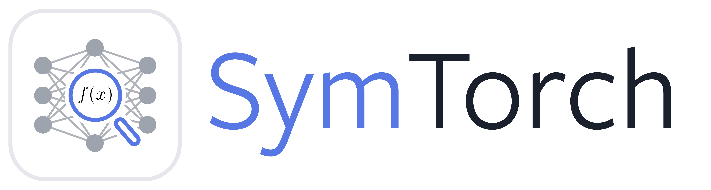
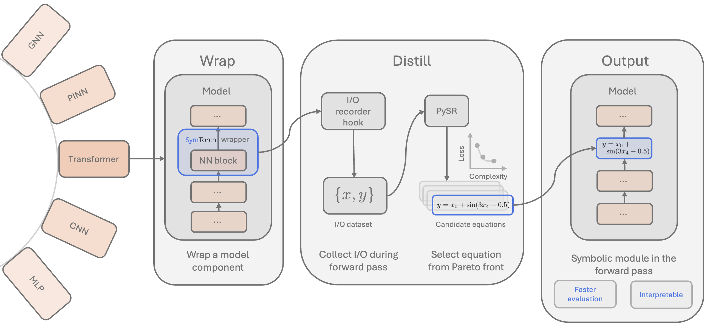

Welcome to the SymTorch Documentation
{kind=link}

{kind=link}

SymTorch is an interpretability toolkit that uses symbolic regression to reveal the behaviour of black-box models.
Installation
SymTorch will soon be released on PyPI.
To view or install the most recent version of SymTorch, please see our GitHub.
Overview
SymTorch combines PyTorch (neural networks) with PySR (symbolic regression) to automatically extract human-readable formulas from trained models. Instead of treating models as black boxes, it reveals the underlying mathematical relationships they’ve discovered.
The SymbolicModel Class
All functionality is accessed through the unified SymbolicModel class, which supports four operational modes:
Layer-Level Mode - Wraps individual PyTorch layers within larger deep learning models - Discovers symbolic equations approximating the behavior of specific layers - Can switch between the original layer and symbolic equations during forward pass and training - See the Getting Started Demo
Model-Agnostic Mode - Works with any callable function (PyTorch, TensorFlow, scikit-learn, or pure Python) - Approximates end-to-end model behavior with symbolic equations - Framework-independent approach to symbolic regression - Activated by passing a callable function to the constructor - See the Getting Started Demo
SLIME Mode (Local Interpretability) - Model-agnostic approach to approximating behavior around specific data points - Symbolic extension of Local Interpretable Model-Agnostic Explanations (LIME) - Provides more expressive local explanations than linear models - Activated by passing
SLIME=Trueandslime_paramstodistill()- See the SLIME DemoPruning Capabilities - Automatically identifies and removes less important output dimensions - Works on a layer-level basis during training - Encourages models to learn simpler and more interpretable patterns - Activated by calling
setup_pruning()before training - See the Pruning Demo
Contents
Documentation:
Examples:
Development: